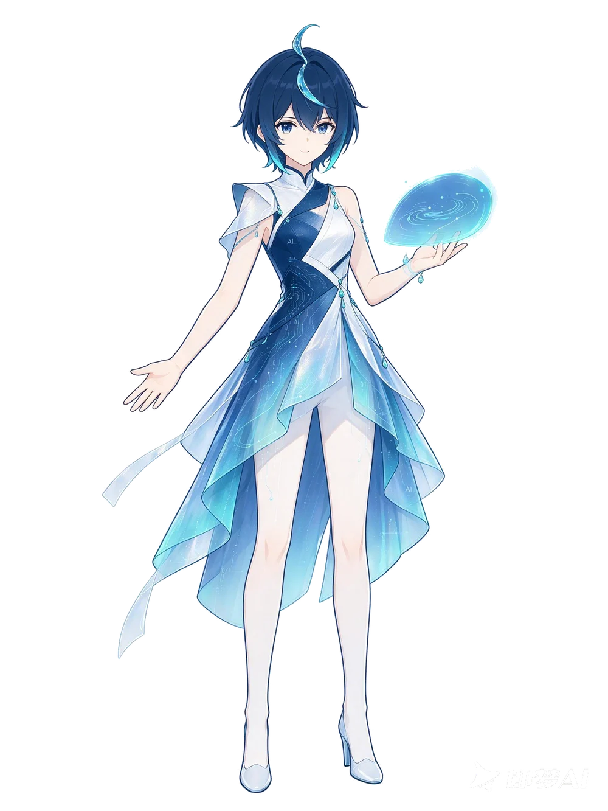

互动 AI 博物馆·1950 — 2022
豆苗时光机 亲历 AI 的七十年
跟着水之子和小豆苗，去图灵的实验室、落雪的深夜，还有会下棋的电脑家里做客。每点亮一个词，小豆苗就长大一点。
往下看看 · 四扇门
DOORS · 01 — 04
选一扇门，今天想去哪儿？
01
→
AI 发展史
坐时光机亲历七十年：图灵的游戏、达特茅斯会议、深蓝与 AlphaGo——你的选择会改变经历。
02
→
AI 知识库
冒险中点亮的每个术语，在这里都能读到体系化的完整故事，还能顺着相关概念继续走。
03
→
AI 实验室
亲手调教一台 1957 年的感知机：喂它数据、给它算力，看它学会分甜果和酸果。
04
→
AI 找茬馆
放大眼睛看仔细：火车顶上的轮子、长翅膀的行李箱、烤箱里的球鞋……把画里和现实不符的地方全点出来才能通关，卡住了可以要提示。
—— 时空跳转 ——
序章
现在
2022
💧

点我和水之子聊天～
水之子
🌱 小豆苗 Lv.1 种子
旁白
点一下 / 空格 往下走 · 亮词能点开看
豆苗时光机/MUSEUM OF AI
GLOSSARY / 收集
点击任意一张 · 展开完整知识
术语手账 冒险里点亮的词，都会收进这里
还没有收集到术语卡，回到冒险里点亮闪闪发光的词吧！
KNOWLEDGE BASE / 体系
按时间与主题分组
AI 知识库 体系化的完整内容 · 点开词条读全文
LABORATORY / 动手
实验 01 · 感知机 1957
AI 实验室 亲手调教一台感知机——看数据、算法、算力怎么配合
训练场 · 甜果还是酸果？
感知机 · AI 的祖师爷果园送来一批水果：横坐标是「颜色深浅」，纵坐标是「个头大小」。你的任务：教一台小机器画出一条分界线，把甜的（🍎）和酸的（🍋）分开。
点「加甜果 / 加酸果」，再点训练场，就能亲手添加样本。样本越多，机器学得越稳。
仪表盘
📊 准确率—
🔁 训练轮次0
🍎 数据（样本数）0
⚡ 算力（每步训练速度）
准备就绪：先加几个水果，再点「开始训练」。
小课堂 · 它是怎么学的？
- 打分：机器给每个水果算分：颜色 × 权重A + 大小 × 权重B + 门槛。分高判甜，分低判酸。
- 改错：判错了，就把权重往正确方向挪一点点——这一挪，就是「学习」。
- 配合：数据是粮食，算法是胃，算力是发动机。三个好朋友齐了，AI 才跑得快。
FIND THE MISTAKE / 观察
题库 3 幅 · 随机抽题
找茬馆 AI 也会看错——你能比它先发现吗？
画里有 4 处和现实不符，点它们找出来。
KNOWLEDGE GRAPH / 连接
双击空白 · 回到中心
AI 知识图谱 点一点节点，看概念之间怎么连起来
单击周围概念 → 以它为中心展开；单击中心或双击任意节点 → 查看知识卡片；双击空白 → 回到「人工智能」。